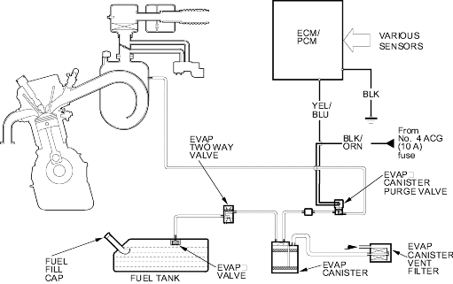

Fuel and Emissions Systems
|
11-24 |
Evaporative Emission (EVAP) Control Diagram
The EVAP controls minimise the amount of fuel vapour escaping to the atmosphere. Vapour from the fuel tank is temporarily stored in the EVAP canister until it can be purged from the EVAP canister into the engine and burned.
The purging vacuum is controlled by the EVAP canister purge valve, which is open whenever engine coolant temperature is above 70°C (158°F).
